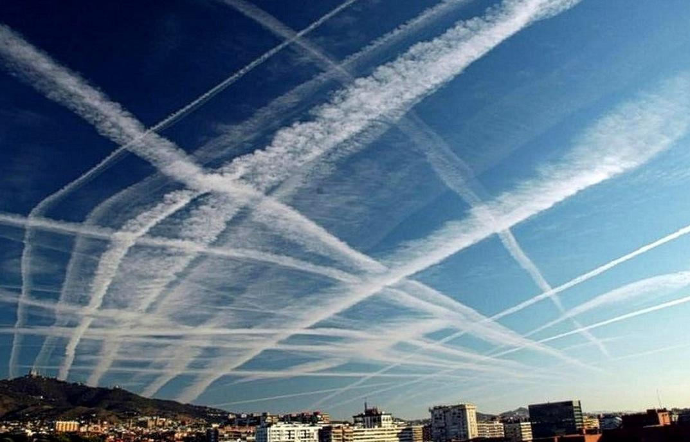

Manipulación climática

1. Descripción General
Este programa ofrece una formación rigurosa y estructurada en los fundamentos de la geoingeniería y su aplicación estratégica en la estabilización del sistema terrestre. Diseñado para un público académico y profesional de alto nivel, el curso integra teoría formal, análisis de riesgos sistémicos y el estudio de tecnologías emergentes para la manipulación climática deliberada. La propuesta formativa aborda el tránsito desde la mitigación convencional hacia el paradigma de la intervención activa, analizando las limitaciones éticas y técnicas que exigen una nueva arquitectura global del clima.
2. Objetivos Académicos
Al finalizar el programa, el participante será capaz de:
- Diferenciar la intervención climática de la mitigación y la adaptación, comprendiendo su rol correctivo para revertir daños eliminando el CO₂ ya presente en la atmósfera
- Dominar los conceptos de sorbente químico y contactor para entender cómo se filtra el carbono del aire ambiente mediante procesos de ingeniería a gran escala
- Analizar por qué la baja densidad del CO₂ en el aire (0.04%) hace que la DAC sea técnica y energéticamente mucho más exigente que la captura en chimeneas industriales
- Comprender el proceso de absorción, regeneración y reciclaje del sorbente para visualizar el funcionamiento continuo de una planta de captura
- Evaluar el impacto transformador de las tecnologías que logran retirar de la atmósfera más carbono del que emiten durante su ciclo de vida
- Identificar la capacidad de la DAC para compensar el carbono de sectores difíciles de electrificar, como la aviación, el transporte marítimo y la agricultura
- Explorar la flexibilidad de ubicar plantas de captura cerca de fuentes de energía renovable o sitios de almacenamiento geológico, sin depender de la ubicación de las industrias emisoras
- Evaluar críticamente los obstáculos económicos, la inmensa demanda energética y el gran requerimiento de suelo que definen la frontera actual de la investigación en DAC
- Comprender la necesidad de sistemas de transporte y almacenamiento geológico permanente para asegurar que el carbono capturado no regrese a la atmósfera
- Analizar los riesgos de la intervención deliberada, como el "riesgo moral" de descuidar la mitigación o los efectos secundarios de la implementación a escala planetaria
3. Estructura
El programa se organiza en módulos secuenciales:
- 1.0 Introducción y Contexto: ¿Por qué Capturar CO2 Directamente del Aire?
- 2.0 Explicación de Conceptos Base: El Lenguaje de la Captura de CO2
- 3.0 Funcionamiento y Profundización Técnica: El Proceso Químico de la DAC
- 4.0 Beneficios, Aplicaciones y Impacto: ¿Qué Ganamos con la DAC?
- 5.0 Desafíos y Dilemas: Los Obstáculos en el Camino del DAC
- 6.0 Sección FAQ (Preguntas Frecuentes)
- 7.0 Banco de Preguntas: Evalúa tu conocimiento
4. Perfil del Participante
Dirigido a:
- Investigadores, académicos, estudiantes de ingeniería
- Directivos del sector tecnológico y ambiental
- Cualquiera interesado en la vanguardia de la acción climática.
Se recomienda familiaridad básica con las ciencias de la Tierra y una visión estratégica orientada al liderazgo global en escenarios de crisis sistémica.